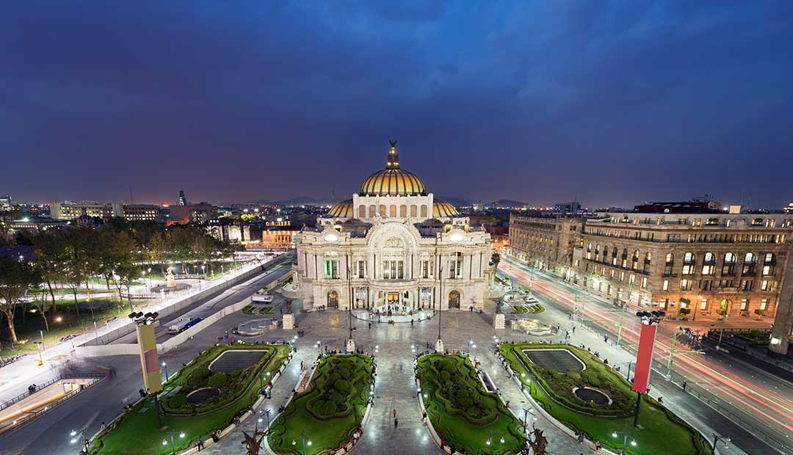
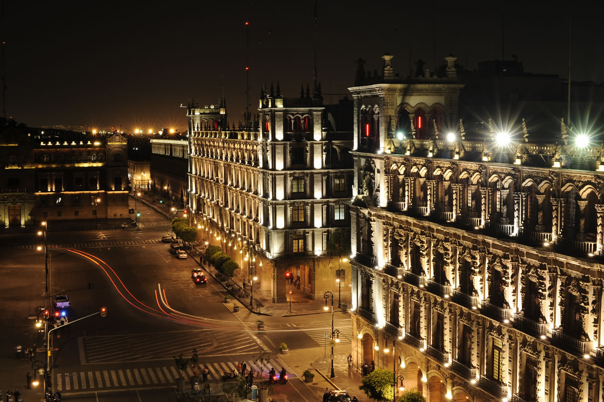
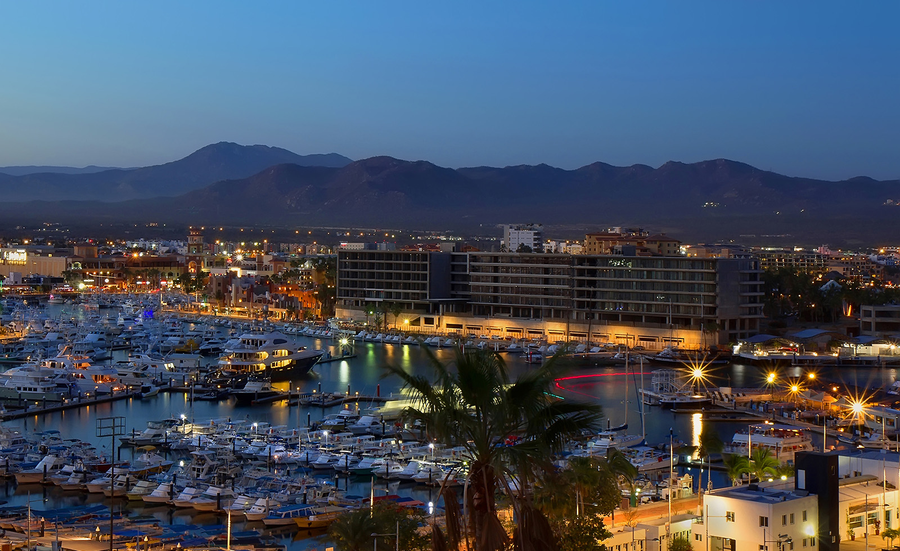
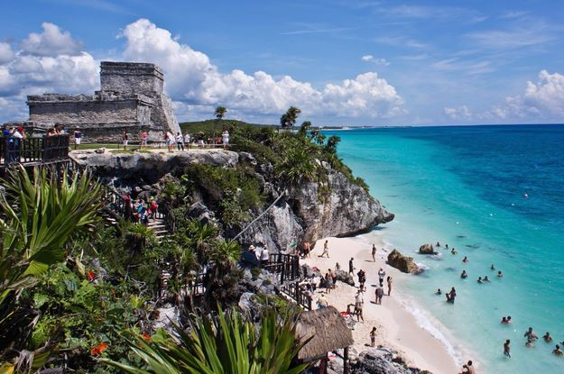
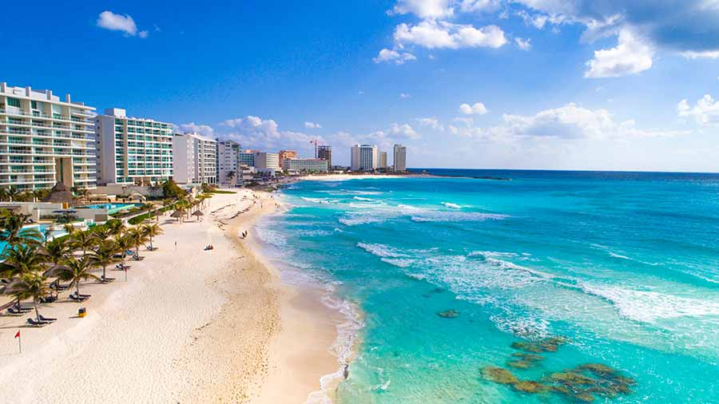

Ciudad de México
La Ciudad de México es la capital de la República, muy conocida por la capilla de la virgen de juquila, por el ángel de la independencia, por su enorme centro de piratería, actualmente un poco peligrosa.

Palacio de Bellas Artes
Es un recinto cultural ubicado en el Centro Histórico de la Ciudad de México, considerado el más importante en la manifestación de las artes en México y una de las casas de ópera más renombradas del mundo. Éste mismo ha sido escenario y testigo de impactantes acontecimientos tanto artísticos, sociales y políticos del país; su construcción data del final de mandato de Porfirio Díaz, por encargo del presidente mexicano con motivo de la celebración del centenario del inicio de la Independencia de México, más fue inaugurado hasta el 29 de septiembre de 1934 tras el estallido de la Revolución mexicana.

Palacio/Ayuntamiento Nacional
Es la sede del Poder Ejecutivo Federal de México. Ubicado al oriente de la Plaza de la Constitución en el Centro Histórico de la Ciudad de México, en la Demarcación Cuauhtémoc, está construido sobre un área de 40 000 m2. Al formar parte del mencionado conjunto arquitectónico en esa área de la ciudad, es en consecuencia Patrimonio de la humanidad desde 1987.
Los Cabos
Es uno de los cinco municipios del estado de Baja California Sur, México, y se localiza en el extremo Sur del Estado. La cabecera municipal es San José del Cabo y la ciudad más importante es Cabo San Lucas a 32 km de la cabecera. Esta área es uno de los destinos turísticos más importantes de México.

La playa de Los Cabos
Considerado uno de los lugares turísticos de México de mayor belleza, deslumbrando con sus kilómetros de playas bañadas por el Mar de Cortés, famosas por sus arenas doradas y aguas turquesas, inmersas entre paisajes de montaña y desierto. Esta zona, también hace parte del conjunto de islas y áreas protegidas del Golfo de California, declaradas por su riqueza natural, Patrimonio de la Humanidad por la Unesco. El pintoresco pueblo de San José del Cabo, la vida nocturna del Cabo San Lucas y las grandes cadenas hoteleras en el Corredor turístico, conforman las tres áreas de Los Cabos, constituyendo en su conjunto un espectacular destino cuya oferta combina el ecoturismo, practica de deportes, descanso y entretención.
Rivera Maya
Es una extensión de la costa del Caribe en la península de Yucatán al noreste de México. Es conocida por sus numerosos centros turísticos con todo incluido, como los de la Playa del Carmen, y sus largas playas. Al sur, Tulum tiene retiros de yoga y las ruinas conservadas de una antigua ciudad puerto maya, ubicada en un afloramiento sobre una playa de arena blanca.

Riviera maya
Es una zona turística de México, situada a lo largo del Mar Caribe, en el estado de Quintana Roo. Geográficamente se extiende a lo largo del litoral, desde la localidad de Isla Blanca al norte, hasta la localidad de Punta Allen al sur, unos 140 km de longitud. Se localiza en la parte oriental de la península de Yucatán.
Acapulco
Es una ciudad y puerto mexicano ubicado en el estado de Guerrero, en la costa sur del país, a 379 kilómetros de la Ciudad de México.
Playas de Acapulco
Es en la actualidad uno de los primeros y más importantes puertos de México por ser una escala para el envío y cruce de las líneas que circulan entre Panamá y San Francisco por medio del puerto transatlántico. Acapulco se hizo de su fama mundial en la década de 1950, visitado sobre todo por estrellas de Hollywood; en la actualidad Acapulco sigue siendo famoso por su vida nocturna y todavía atrae a muchos turistas, aunque la mayoría son nacionales, y se ha convertido en uno de los destinos turísticos de México más importantes, al lado de Cancún y la Ciudad de México.
Cáncun
Es una ciudad de México ubicada en la península de Yucatán que limita con el mar Caribe y que es conocida por sus playas, los numerosos centros turísticos y la vida nocturna. Se compone de 2 áreas distintas: el área del centro más tradicional y la Zona Hotelera, la franja costera con hoteles altos, clubes nocturnos, tiendas y restaurantes. Cancún también es un destino popular entre estudiantes durante el período de vacaciones universitarias en la primavera.

Playas de Cáncun
Tuvo una notable transformación, ya que, de ser una isla de pescadores rodeada de selva virgen y playas desconocidas, en la actualidad es el centro turístico mexicano más reconocido en el mundo. La Organización Mundial del Turismo (OMT), a través de la Fundación OMT-Themis concedió el premio Lo Mejor de lo Mejor "a la excelencia y la gobernanza" al Fideicomiso de Promoción Turística de Cancún el 3 de febrero de 2007. Cancún se convirtió de esta forma en un organismo avalado por el Departamento de Educación y Gestión del Conocimiento de la OMT. Actualmente Cancún es el destino que recibe más turistas internacionales de México,